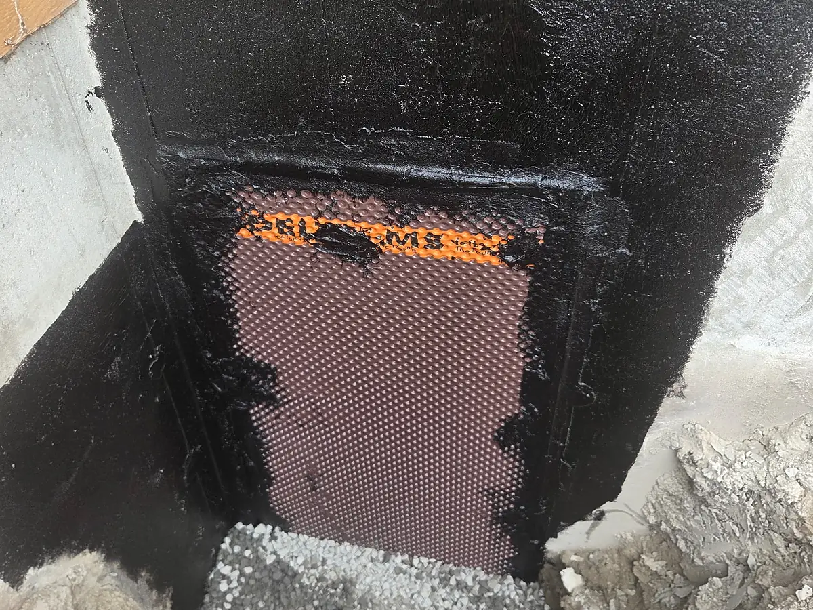

Une boue orangée, collante, dans le puisard ou à la sortie du drain? Des taches couleur rouille au bas des murs du sous-sol? C'est souvent de l'ocre ferreuse. Elle n'est pas dangereuse en soi, mais elle bouche peu à peu le drain français, et un drain bouché finit par laisser l'eau entrer au sous-sol. Voici comment la reconnaître, la confirmer et quoi faire.

Qu'est-ce que l'ocre ferreuse?
Dans certains sols, l'eau souterraine contient du fer dissous. Quand cette eau arrive dans le drain français, elle entre en contact avec l'air. Des bactéries qui se nourrissent du fer, les ferrobactéries, le transforment alors en un dépôt orangé et gélatineux : l'ocre ferreuse.
Ce dépôt colle aux parois du drain, bouche ses perforations et colmate la membrane géotextile et la pierre qui l'entourent. On en rencontre dans certains secteurs de Laval, de la Rive-Nord et de Montréal, souvent dans les sols argileux ou sablonneux où la nappe d'eau est haute.
Les signes à surveiller
- Une boue orangée ou rouille dans le puisard ou le bassin de la pompe.
- Des dépôts orangés aux sorties du drain ou dans le drain de plancher.
- Des taches couleur rouille au bas des murs ou sur la dalle du sous-sol.
- Une pompe de puisard qui s'encrasse, bloque ou part plus souvent.
- De l'eau au sous-sol après une pluie, alors qu'il n'y en avait jamais avant.
À retenir : une boue orangée dans le puisard ne veut pas dire que le drain est déjà bouché. Mais c'est le signe qu'il faut le surveiller et le vérifier avant que l'eau n'entre.
Pourquoi c'est un problème pour votre drain
Le drain français sert à capter l'eau autour de la fondation et à l'évacuer avant qu'elle ne pousse contre les murs. L'ocre ferreuse s'accumule lentement, sur des mois ou des années. Quand les perforations et la pierre sont colmatées, l'eau ne passe plus : elle reste contre la fondation et finit par entrer par les fissures, par le joint entre le mur et la dalle ou au bas des murs.
Comment la confirmer : l'inspection par caméra à 350 $
Une caméra passée dans le drain montre s'il y a de l'ocre, jusqu'où elle s'est rendue et si le drain est encore en bon état. Elle permet aussi de faire la différence avec un drain écrasé, déformé ou rempli de sédiments, qui ne se règle pas de la même façon. Chez Stratimo, l'inspection par caméra coûte 350 $.
Quoi faire selon l'état du drain
Le drain est encore en bon état
Si l'ocre est présente mais que le drain coule encore, un nettoyage sous pression peut le dégager. Il faut savoir que l'ocre revient presque toujours : ce nettoyage est un entretien à refaire régulièrement, pas une réparation définitive.
Le drain est colmaté ou abîmé
Si l'ocre a bouché le drain et la pierre qui l'entoure, ou si le drain est écrasé, il faut le remplacer. On excave jusqu'à la semelle, on pose un nouveau drain dans de la pierre nette avec une membrane géotextile, et on en profite pour réparer les fissures et imperméabiliser le mur. Dans un secteur à ocre, on prévoit des accès de nettoyage pour pouvoir entretenir le nouveau drain facilement. Pour un ordre de grandeur, consultez notre article sur le prix d'un drain français.
Dans tous les cas : surveiller
Jetez un coup d'œil au puisard au printemps et à l'automne, et nettoyez la pompe si elle s'encrasse. Si la boue orangée augmente beaucoup ou si l'eau apparaît au sous-sol, faites vérifier le drain sans attendre.
Ce qui ne fonctionne pas
Verser des produits dans le puisard ne règle pas le problème : les bactéries se trouvent tout le long du drain et dans le sol autour de la fondation. Et une injection de fissure, même bien faite, ne remplace pas un drain bouché. Si l'eau entre par plusieurs endroits, c'est le drainage qu'il faut regarder.
En résumé
Une boue orangée dans le puisard, c'est souvent de l'ocre ferreuse. Elle n'est pas dangereuse, mais elle colmate le drain français avec le temps. Faites confirmer l'état du drain par caméra, nettoyez-le s'il est encore bon, remplacez-le s'il est bouché, et surveillez le puisard deux fois par année. À Laval, voyez aussi notre page drain français à Laval.